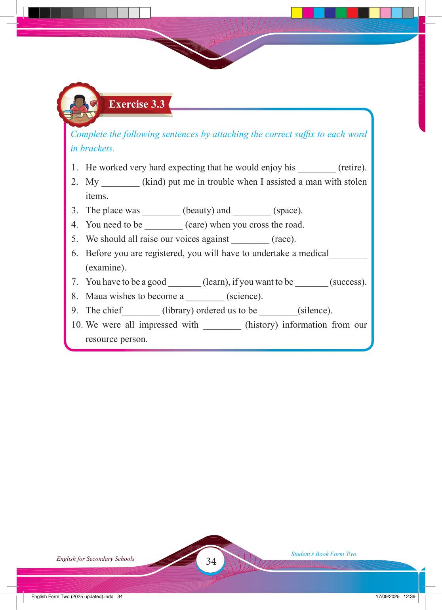

34
Student’s Book Form Two
English for Secondary Schools
Exercise 3.3
Complete the following sentences by attaching the correct suffi x to each word in brackets.
1. He worked very hard expecting that he would enjoy his ________ (retire).
2. My ________ (kind) put me in trouble when I assisted a man with stolen items.
3. The place was ________ (beauty) and ________ (space).
4. You need to be ________ (care) when you cross the road.
5. We should all raise our voices against ________ (race).
6. Before you are registered, you will have to undertake a medical________
(examine).
7. You have to be a good _______ (learn), if you want to be _______ (success).
8. Maua wishes to become a ________ (science).
9. The chief________ (library) ordered us to be ________(silence).
10. We were all impressed with ________ (history) information from our resource person.
17/09/2025 12:39